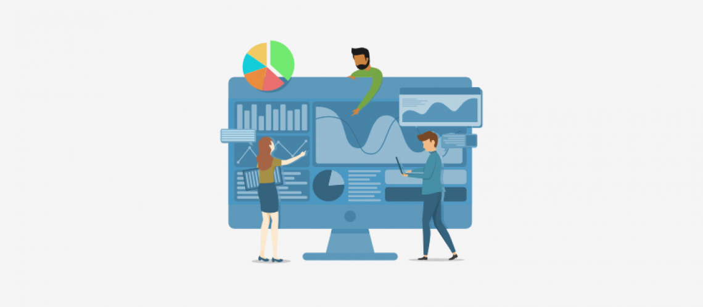
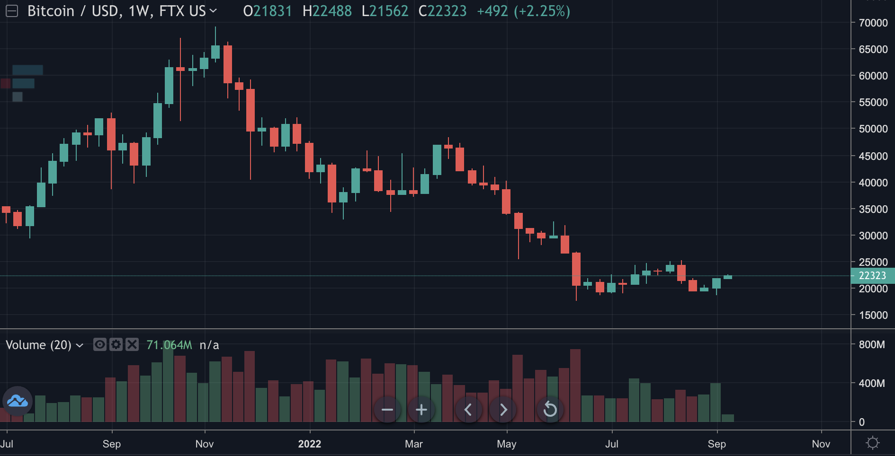
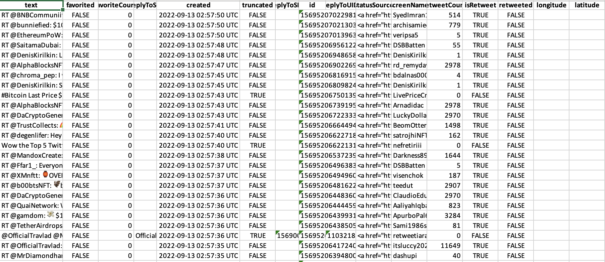

Data Gathering
Picture from Freeonlinesurveys
Data from Python API : FTX Exchange
About FTX Dataset
Context
This dataset consists of FTX spot prices for BTC,ETH and contract prices for other popular coins (popular coins are ranked according to Coinmarketcap. The data spans over 1 year(from September 1, 2021 to September 1, 2022). The data includes daily data of opening price, the est price, the lowest price, closing price and trading volume for each cryptocurrency.
Code and Methodology
Warning
Waring : FTX has filed for bankruptcy. Please do not try to use the API to obtain any information about FTX.
Code
from PIL import Image
myImage1 = Image.open('../../501-project-website/images/data-gathering/btc_ftx.png')
myImage1
From the structure of the FTX web page, it is very difficult for users to get market data in exchange. Because FTX is an exchange with keep moving real-time prices, the prices of all coins are presented in a bar. Unlike yahoo finance, which gives users the option to access historical market data on the web page. The most convenient option for users to get FTX’s API data is to grab market data automatically.
Obtaining FTX data by API is a method that allows us to automatically trade cryptocurrencies on FTX via code. The price data can be obtained by calling the required REST API endpoint. Import the request package using python, enter the relevant URL according to the official API doc instructions, and set the start timestamp and end timestamp. By rewriting the desired market name, get the new path url, and finally get a file composed of json. The file contains information about a particular currency on the FTX exchange. The data is then arranged in a pandas packages data framework to better observe and understand the data. I also used the same approach to get market information for spots and swaps.
Contents
The dataset has one CSV files (7 columns and 3000+ rows)
- raw_data_ftxprop_market_data.csv
- startTime: (date)
- open: (Price of the currency at 0:00 UTC each day)
- high: (Maximum price within 24 hours of UTC time per day)
- low: (Lowest price within 24 hours of UTC time per day)
- close: (Price of the currency at 23:59 UTC each day)
- volume: (Trading volume within 24 hours per day at UTC time)
- coin pair:
- AVAX/USD
- BTC/USD
- DAI/USD
- DOGE/USD
- DOT/USD
- ETH/USD
- LINK/USD
- SOL/USD
- UNI/USD
- XRP/USD
- Data includes:
- Timestamp from Sep 2021- Sep 2022
- 3439 price data
- 10 spot pairs
Review Dataset
FTX DATASET
Code
import numpy as np
import pandas as pd
pd.set_option('display.float_format',lambda x: '%.3f' % x)
ftx=pd.read_csv('../../data/00-raw-data/raw_data_ftxprop_market_data.csv')
ftx=ftx.drop(['time'],axis=1)
ftx.head(5)| startTime | open | high | low | close | volume | exchange | |
|---|---|---|---|---|---|---|---|
| 0 | 2021-09-01T00:00:00+00:00 | 47121.000 | 49131.000 | 46521.000 | 48846.000 | 484495675.810 | BTC/USD |
| 1 | 2021-09-02T00:00:00+00:00 | 48846.000 | 50407.000 | 48623.000 | 49273.000 | 602599224.708 | BTC/USD |
| 2 | 2021-09-03T00:00:00+00:00 | 49273.000 | 51083.000 | 48340.000 | 50024.000 | 781215394.637 | BTC/USD |
| 3 | 2021-09-04T00:00:00+00:00 | 50025.000 | 50564.000 | 49387.000 | 49936.000 | 360255343.979 | BTC/USD |
| 4 | 2021-09-05T00:00:00+00:00 | 49936.000 | 51928.000 | 49463.000 | 51807.000 | 435352720.465 | BTC/USD |
Because the current FTX has filed for bankruptcy in November, a week after the website was hacked. So FTX exchange linked may contain a Trojan horse virus of fraud information. To avoid the potential danger, I used the Huobi exchange BTC/USDT instead of the previous web links.
To learn more about original data of BTC price from FTX exchange, please see BTC price from Huobi exchange instead.
Inspiration
What is the difference between the highest and lowest price of the currency within one year?
Do price changes on the day have an impact on trading volume?
Is it possible to predict future price trends from prices over time?
Data from R API : Twitter
About Twitter Dataset
Context
This dataset consists of many comments about cryptocurrency obtained from Twitter’s API. These data were obtained on September 5, 2022, and the dataset includes the content of users’ comments on the search topic, retweeted comments, and the number of retweets and likes. It also contains data such as the latitude and longitude of the users when sending the message, and the user’s name.
Code and Methodology
Use R to connect to a Twitter user query endpoint using JSON returned from the Twitter API. With the user query endpoint, Twitter allows the ability to use user objects to determine the correlation between the number of a person’s followers and the sentiment score of their bio. Twitter allows the use of user objects to determine the correlation between the number of a person’s followers and the sentiment score of their biography. User objects can also be used to map a group of accounts based on their publicly listed position in the account profile. First, a developer account needs to be registered before getting the Twitter data. After that create a project and use it to generate the credentials required to use the Twitter API.
After getting the consumerKey, consumerSecret, Bearer_Token, access_Token, access_Secret. Use R to import ggplot2, lubridate, tidyverse, quantmod, selectr, xml2, rtweet, wordcloud2, tm, dplyr, twitteR, ROAuth, jsonlite,writexl
Get a link to Twitter through setup_twitter_oauth, then use twitteR::searchTwitter to enter the desired search terms, get the number of entries and the date the tweet was posted, and export to xlsx format, which is the raw data from twitter.
Contents
The dataset has one CSV files (15 columns and 1000 rows)
- rawdata_twitter.csv
- text(User Comments)
- favorited (Whether this status has been favorited)
- favoriteCount(Number of times this tweet was favorite)
- replyToSN (Screen name of the user this is in reply to)
- created (When this status was created)
- truncated (Whether this status was truncated)
- replyToSID (ID of the user this was in reply to)
- id (ID of this status)
- statusSource
- screenName (Screen name of the user who posted this status)
- retweetCount(The number of times this status has been retweeted)
- isRetweet (Whether this status was Retweet)
- retweeted (TRUE if this status has been retweeted)
- longitude (The longitude of the status)
- latitude (The latitude of the status) Source from twitteR (version 1.1.9)
- text(User Comments)
- Data includes:
- Timestamp from 2022-09-05
- 1000 data
Review Dataset
Twitter DATASET
Code
from PIL import Image
myImage2 = Image.open('../../501-project-website/images/data-gathering/twitter_data.png')
myImage2
By observing the obtained Twitter data, most of the columns in the raw data is not helpful for sentiment analysis. Only the first column of text data should be kept.When using R to output a csv file of tweet data, it always reports an error for reading the csv directly using python due to the special nature of tweet data. Because ‘utf-8’ codec can’t decode byte , JSON files are more suitable for data cleaning and sentiment analysis afterwards than csv files. However, after obtaining the data, JSON format is more difficult to perform preliminary data observation compared to csv format. So in the data cleaning interface afterwards, JSON files will be used directly for the next data processing step.
To learn more about Twitter dataset see Key words related to ETH
Inspiration
Is the public’s sentiment about the topic positive or negative?
How to clean out irrelevant text information？
Is it possible to predict future topic trends?